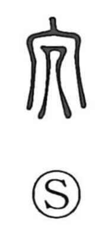

冗

Uncategorized
Kun: | On: jo
superfluous ・ redundant ・ idleness ・ waste
Explanation
In its earliest form, written as 宂, the character shows a human figure (儿) within the roofed chamber of an ancestral mausoleum (冖). It portrays the person assigned to the night watch there—someone with little to do during the long vigil—so it first meant “hima,” spare or idle time. From this image the sense broadened to surplus and superfluity, seen in words like 冗食 (provisions for a night watchman), 冗官 (an official without duties), 冗員 (redundant personnel), 冗散 (idleness; uselessness), and 冗費 (wasteful expense). In 冗談 (“jōdan,” joke), 冗 serves as a phonetic stand-in for 常 in the sense of everyday talk. The standardized form is 冗.